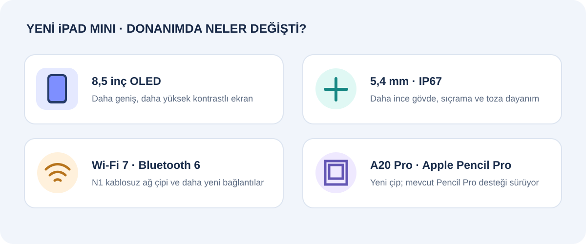
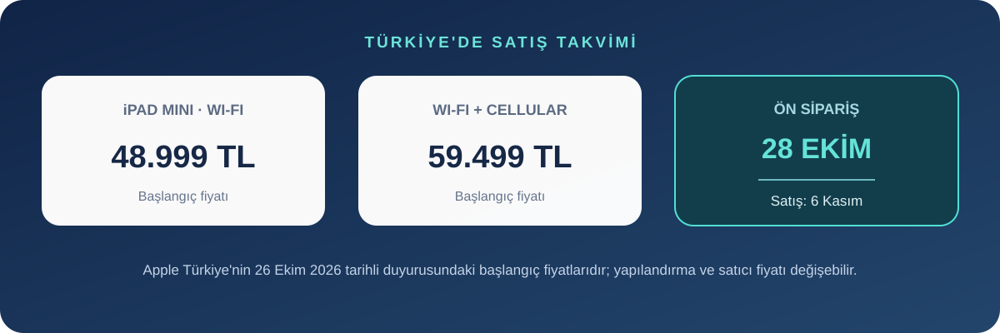

Apple, 26 Ekim 2026’da iPad mini’yi OLED ekran ve A20 Pro işlemciyle yeniledi. Yeni modelin 8,5 inç ekranı önceki 8,3 inç mini’den daha büyük; gövde ise incelip hafifliyor. Apple Türkiye başlangıç fiyatını Wi-Fi için 48.999 TL, Wi-Fi + Cellular için 59.499 TL olarak açıkladı. Ön sipariş 28 Ekim’de, satış ve teslimatlar 6 Kasım’da başlıyor.
Bu güncellemenin öne çıkan tarafı yalnızca işlemci değil: mini serisinde ilk kez OLED ekran, daha geniş görüntü alanı, IP67 koruma ve Wi-Fi 7/Bluetooth 6 bağlantısı geliyor. Yine de yeni duyurulan bir cihaz olduğu için bu yazı teknik özelliklere ve Apple’ın açıkladığı bilgilere dayanıyor; bağımsız pil, hız veya ekran ölçümleri henüz yok.
8,5 inç OLED: ekran büyüyor, kasa aynı boyutta kalıyor
Yeni iPad mini, 8,5 inç Super Retina XDR OLED ekrana sahip. Apple’a göre cihazın dış ölçüleri önceki modelle aynı kalırken çerçeveler yüzde 24 inceliyor. OLED, piksel düzeyinde ışık kontrolüyle siyahları daha derin gösterebilir; Apple ayrıca 2.000.000:1 kontrast oranı ve HDR içerikte 1.200 nit tepe parlaklık bildiriyor. SDR ve HDR için tam ekran parlaklığı 600 nit olarak listelenmiş.
Yansımanın yoğun olduğu yerde çalışanlar için nano-texture cam seçeneği de var. Ancak bu seçenek 128 GB temel modelde bulunmuyor; Apple teknik özelliklerinde yalnızca 256 GB ve 512 GB yapılandırmalarında sunulduğunu belirtiyor. Depolama seçerken bu ayrımı ve buna bağlı fiyat farkını kontrol etmekte fayda var.

A20 Pro, Wi-Fi 7 ve daha kullanışlı kamera konumu
A20 Pro; 7 çekirdekli GPU, donanım hızlandırmalı ışın izleme ve Apple’ın yeni nesil kablosuz N1 çipiyle geliyor. Apple, grafik performansını önceki modele göre 2,7 kata kadar hızlı olarak tanımlıyor; bu rakam şirketin kendi test ve karşılaştırması, bağımsız ölçüm değil. 128 GB ve 256 GB sürümler 5 çekirdekli CPU kullanırken 512 GB sürüm 6 çekirdekli CPU ve çift 16 çekirdekli Neural Engine ile listeleniyor. Yani en yüksek depolama seçeneği yalnızca daha fazla alan değil, farklı bir işlemci yapılandırması da sunuyor.
N1 bağlantı çipi Wi-Fi 7, Bluetooth 6 ve Thread desteği sağlıyor. Hücresel modelde C2 modem ve eSIM var; Apple önceki nesle kıyasla hücresel veri hızında yüzde 50’ye kadar artış iddia ediyor. Ön kamera yatay kenara taşınmış 12 MP Center Stage kamera; arka tarafta 12 MP geniş kamera, 4K/60 fps video ve belge taramasına yardımcı Adaptive True Tone flaş bulunuyor. Apple Pencil Pro ve USB-C girişli Apple Pencil desteği de korunuyor.
A17 Pro modelinden farkı ne?
2024 model iPad mini (A17 Pro), 8,3 inç IPS tabanlı Liquid Retina ekran, 6,3 mm kalınlık ve 293 gram Wi-Fi ağırlığıyla tanıtılmıştı. Yeni modelin ekranı 8,5 inç OLED’e geçiyor; gövde 5,4 mm kalınlığa ve 255 gram Wi-Fi ağırlığına iniyor. Böylece cihaz yaklaşık 38 gram hafifliyor. Bu fark, tek elle uzun süre kullanan veya tableti sürekli çantasında taşıyan kişiler için daha hissedilebilir olabilir.
| Özellik | iPad mini (A17 Pro, 2024) | iPad mini (A20 Pro, 2026) |
|---|---|---|
| Ekran | 8,3 inç Liquid Retina, IPS | 8,5 inç Super Retina XDR, OLED |
| Kalınlık | 6,3 mm | 5,4 mm |
| Wi-Fi model ağırlığı | 293 g | 255 g |
| Su ve toz dayanımı | Resmî özellik listesinde IP67 yok | IP67 |
| Bağlantı | Wi-Fi 6E, Bluetooth 5.3 | Wi-Fi 7, Bluetooth 6 |
Karşılaştırmadaki eski model verileri Apple’ın iPad mini A17 Pro teknik özelliklerine, yeni model verileri ise yeni iPad mini teknik özelliklerine dayanıyor. Apple’ın yeni model için verdiği yüzde performans artışları şirket iddiasıdır; bağımsız testlerde doğrulanmış sonuç gibi okunmamalı.
Türkiye fiyatı, renk ve satış tarihleri
Yeni iPad mini gece yarısı ve yıldız ışığı renklerinde, 128 GB, 256 GB ve 512 GB seçenekleriyle geliyor. Türkiye’de Wi-Fi modeli 48.999 TL’den, Wi-Fi + Cellular modeli 59.499 TL’den başlıyor. Apple’ın eğitim fiyatı 45.499 TL’den başlıyor. Yeni Smart Folio 5.499 TL; Apple Pencil Pro 7.199 TL olarak listelenmiş.

Kimler için yükseltme mantıklı?
- OLED isteyen mevcut mini kullanıcıları: LCD’den OLED’e geçiş ve biraz daha büyük ekran, bu neslin en görünür yeniliği.
- Tableti dışarıda kullananlar: Daha düşük ağırlık, Wi-Fi 7, IP67 ve daha yatay konumlu ön kamera hareket halindeki kullanım için anlamlı olabilir.
- A17 Pro mini’si sorunsuz çalışanlar: Eski model hâlâ kompakt ekran, Pencil Pro ve güçlü bir işlemci sunuyor. OLED, IP67 veya daha hafif gövde ihtiyacın yoksa yalnızca A20 Pro adı için yükseltmek şart değil.
- Yeni alıcılar: 48.999 TL başlangıç fiyatı önemli bir bütçe. Satın almadan önce nano-texture’ın yalnızca üst depolama seçeneklerinde olduğunu, Cellular seçeneğinin de fiyatı artırdığını hesaba kat.
IP67, kontrollü test koşullarında bir metreye kadar suya en fazla 30 dakika dayanım derecesidir; kalıcı su geçirmezlik anlamına gelmez. Apple sıvı hasarının garanti kapsamı dışında olduğunu da belirtiyor. Bu nedenle yeni koruma derecesi tableti bilerek suya sokmak için bir gerekçe sayılmamalı.
Sonuç
Yeni iPad mini’nin en büyük değişimi mini serisinin OLED’e geçmesi. Daha büyük ekranı aynı kasa içinde sunması, cihazı inceltip hafifletmesi ve IP67 eklemesi de günlük kullanımda karşılığı olabilecek yenilikler. Türkiye fiyatı 48.999 TL’den başlıyor; satın alma kararı verirken özellikle OLED/nano-texture seçeneği, depolama ve Wi-Fi–Cellular farkını birlikte değerlendirmek gerekiyor. A17 Pro modelinden geçişte kararın merkezine işlemci isminden çok ekran ve taşınabilirlik ihtiyacını koy.
Kaynaklar
- Apple Türkiye: Yeni iPad mini duyurusu, Türkiye fiyatı ve satış tarihleri
- Apple: iPad mini A20 Pro teknik özellikleri
- Apple Destek: iPad mini A17 Pro teknik özellikleri
Son kontrol: 26 Ekim 2026. Teknik özellikler ve Türkiye fiyatı Apple’ın duyuru ve ürün sayfalarına göredir. Cihaz henüz satışa çıkmadığından bağımsız kullanım ve performans testleri bu yazıda yer almıyor.